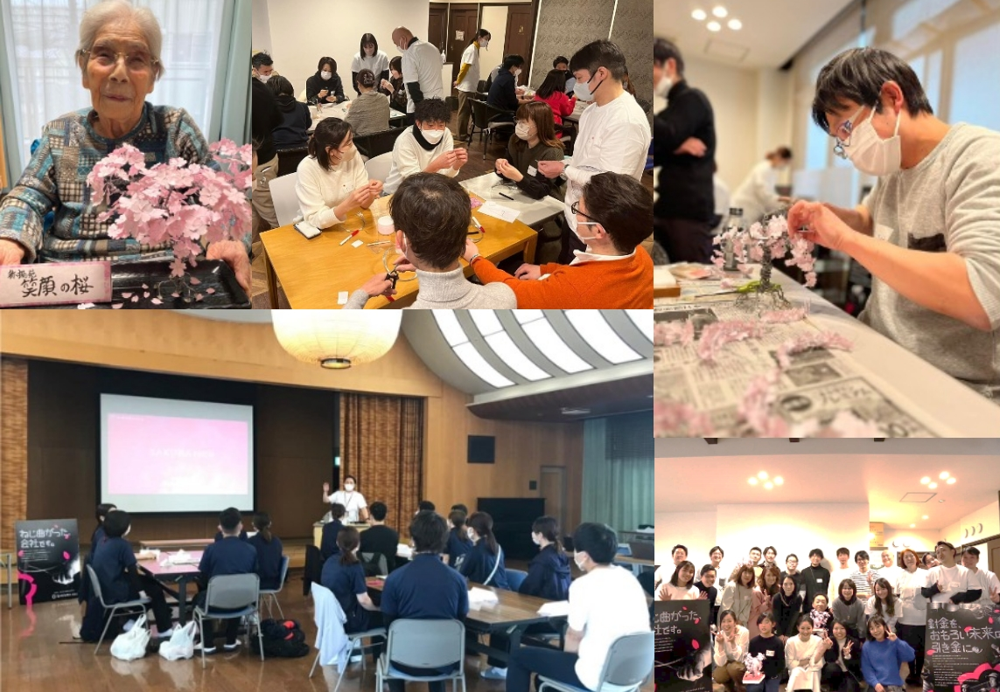

私たちの提供価値と
事業展開
サクラテックの「国土と社会の“興”靭化」とは、単なる耐久性などの強靭化ではなく、
以下の「つよく・やさしく・うつくしく」を兼ね備えた「“興”靭さ（おもろカッコいい）」のことを指します。
Valueサクラテックのバリュー
針金メーカーとしての基本的な使命を果たす。
取引先に対して、より良い製品をニーズに応えながら安定的に提供する。
2次加工メーカーとしての基本的価値を追求しています。
-
うつくしい亜鉛めっき鉄線・
鋼線軟鋼線材や硬鋼線材に亜鉛めっきコーティングを施した、サクラテックを代表する製品です。耐食性はさることながら、その最大の特徴は見た目のうつくしさ。人の目に触れるフェンスや落石防護網など、様々な針金製品の部材として活躍しています。
-
災害大国の
国土強靭化への貢献自然が豊かだからこそ災害の多い日本において、人々の安心安全な生活を守るインフラ整備は重要です。サクラテックの製品は、質の高い針金によって落石や川の氾濫を防ぐなど国土強靭化の一翼を担っています。
-
果樹園や養殖いけすなど
多様な活躍強度と耐久性、加工柔軟性に優れた当社の針金製品は、果樹園用規格の針金や牧柵の有刺鉄線、土木建築用の部材鉄線、海岸付近のかごマット、魚の養殖いけす鉄網など多岐にわたって活躍しています。
サステナブルな素材で、
社会に貢献する。
再生可能な“鉄”を扱いながら、
国土強靭強化に限らず、
その可能性を広く社会に活かしていく
取り組みを行っています。
-

ご高齢者の方々に、
アートでリハビリを。手先を動かすワイヤーアートづくりは、リハビリに効果があると考え、介護グループと連携。職員の方々がご高齢の入居者の方々にワークができるよう、サクラテックメンバーが指導しています。
-
発達に課題を持つ
子どもたちに楽しみを。発達に心配や難しさのある子どもたちのための“運動療育”に取り組んでいるLIGと連携し、ワイヤーアートづくりを実施しました。子どもたちに、つくる楽しさ・喜びを感じてもらいたいという想いで活動しています。
-
モノづくりの楽しさを、
地域の人々と。毎年4月に、サクラテック主催で複数のモノづくり企業と連携した地域イベントを開催。地域の人々がワークショップやゲームを通じて、気軽にモノづくりを体験できる場を提供しています。
廃材ワイヤーを、アートへ。
いかにワイヤーで、情緒的な価値を
新たに創造するか。
当社では生産で発生するワイヤーの廃材を
活用したアートプロダクトを
展開しています。
-
枯れない薔薇『KIMIHANA』
大切な人への想いを紡ぐ、Rose Wire ART『KIMIHANA』。
KIMIHANA
朽ちることのない花束が、変わらぬ愛をいつまでも伝え続けます。
廃材を活用したサスティナブルな材料で作られています。 -
胡蝶蘭アートレンタル『Nottefiore』
廃材針金を枯れることのない胡蝶蘭として生まれ変わらせた、唯一無二のレンタルアート『ノッテフィオーレ』。法人の周年記念や新店舗の開店、高級ホテルの装飾、その他お祝いに、生花では表現できない艶やかな色彩と質感で華を添えます。
コチョスク -
ワイヤーアートプロダクト『HARIOMO』
針金の可能性を追求するために手掛けている、ワイヤーアートのプロダクトブランドです。装飾品やインテリア製品など、アーティストともコラボしながら多様なプロダクトを開発しています。
HARIOMO